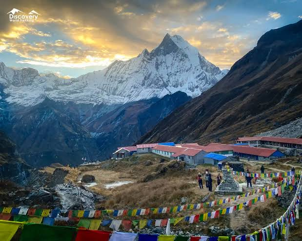

ABC Trek, also known as the Annapurna Base Camp Trek, is one of Nepal’s most popular trekking routes.
It offers breathtaking views of the Annapurna mountain range and beautiful Himalayan landscapes.
The trek passes through traditional villages, forests, rivers, and diverse mountain scenery.
It is a memorable adventure for nature lovers and trekking enthusiasts.